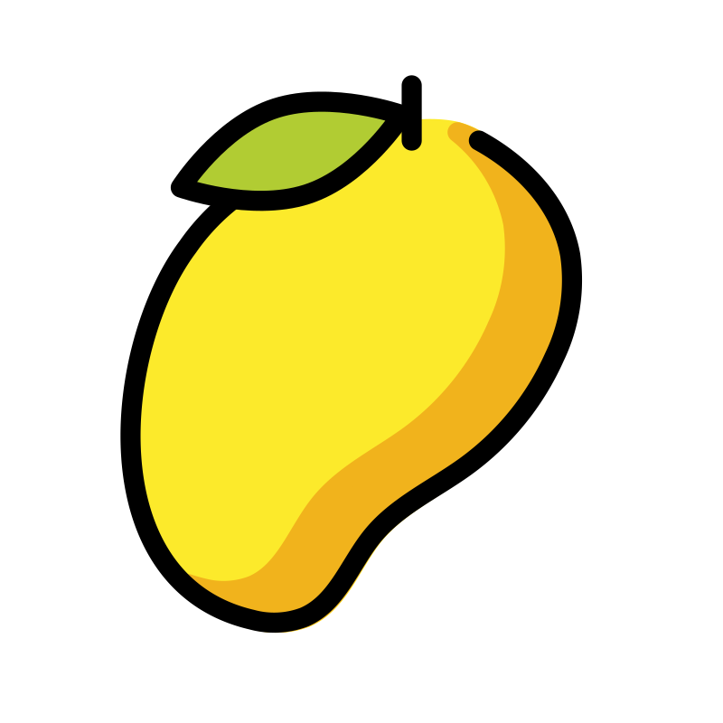

- FESTIVAL OF
- ANTIPOLO
SUMAKAH



A Celebration of tradition

Sumakah Festival - A Celebration of culture, food, and tradition
The Sumakah Festival is an annual event held in Antipolo City, Philippines, known for celebrating the city's rich cultural heritage and its famous products like suman, manga, kasoy (cashew), and hamaka (Philippine ham). It's a vibrant festival with parades, street dances, and other cultural performances, and it's a way for the community to showcase its identity and traditions